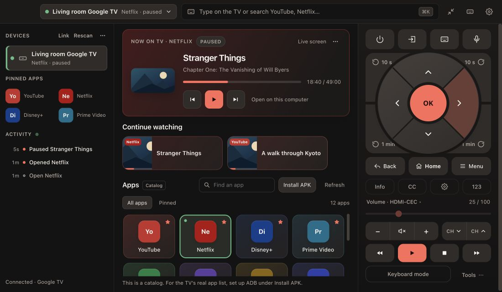
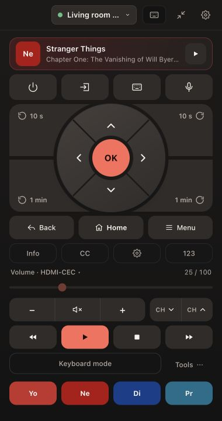

Big controls. Small footprint.
Four roomy directional sections, a separate OK button, and press-and-hold navigation. Switch to the compact remote when you want your desk space back.
Mac + Windows · Free & open source
Control Chromecast, Samsung and other smart TVs without leaving your keyboard.
Change the volume. Queue something good. Type the whole search. One remote, right where you’re working.
No account. No subscription. Your TV stays on your network.

Real app screens with sample devices and playback.
LESS REACHING. MORE WATCHING.
Four roomy directional sections, a separate OK button, and press-and-hold navigation. Switch to the compact remote when you want your desk space back.
Type and search from your computer. Paste a link to open supported media on the TV. Keyboard mode turns your keys into remote controls.
Pin the apps you use, then drag them into order. Put Netflix or Stremio at the top, or give a corner of the remote a shortcut of its own.
Link a streaming box with its screen. Send navigation to your Google TV and volume to your Samsung, all from the same remote.

KNOW WHAT’S ON
See playback details when your TV shares them. Seek through Cast sessions, keep an eye on progress, and return to recent media.
Native Netflix and Stremio playback reporting on Android TV needs optional ADB setup. Titles and artwork depend on what each app exposes. Protected video cannot be shown in screen previews.
How playback reporting works ↗FIND YOUR SETUP
Connect your computer and TV to the same local network. The available controls depend on your device.
| Device | What you can do | First connection |
|---|---|---|
| Android TV / Google TV | Navigation, typing, apps and media keys | Enter the code shown on the TV |
| Chromecast / Google Cast | Playback, seeking, volume and casting supported URLs | Discover on your local network |
| Samsung Tizen | Remote keys, apps, typing and volume | Choose Allow on the TV |
| LG webOS | Remote keys, apps, typing, volume and TV channel information | Accept the TV’s connection prompt |
| Roku | Remote keys, typing, apps and supported TV controls | Enable network control if required |
A Chromecast is a media receiver, so it does not have the full directional remote of an Android TV. Some model-specific features remain unverified on hardware.
YOUR LIVING ROOM IS YOUR BUSINESS
No sign-in or analytics. Pairings and preferences stay on your computer. Optional online features fetch app icons, search results, artwork and updates; Local network only switches those connections off.
Read the security model ↗THE REMOTE YOU ALREADY HAVE ROOM FOR
TV Controller 0.8.0 · Free under the MIT license
Choose the file for your computer on the Releases page. Builds are not notarized by Apple or signed by a verified Windows publisher, so your OS may ask for confirmation on first launch.
View source & build it yourself ↗